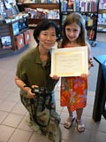

- Youth in Arts supports children’s arts,; dance, sing, paint, and act. You too can give the “Gift of Art” (PDF format, donation form).
- The image below shows all the chalk drawings in the book. Click on the image below to see a larger version.
Marin Independent Journal, Novato, CA. The Marin IJ published Christine Brenneman’s artice of June 8, 2006 in its IJ Weekend. Click the Bad Cat to read the article.
Booksigning at Barnes & Noble, Greenbrae, CA, June 17, 2006

First photo, left to right, Judy Petersen, Barnes & Noble store manager; Susan Fan-Brown; Patty Sokolecki Smoot. Other photos, Susan, Patty, Jack’s father, and the young Madonnari.
=====================
About
Home

© Two Gals Publishing, 2006 - The image below shows all the chalk drawings in the book. Click on the image below to see a larger version.

Children’s Postcard Book, produced for Youth in Arts, San Rafael, California. The postcard book contains twenty-four postcards showing the work of young chalk drawing artists (Madonnari) from Children’s Avenue, part of the 2005 Italian Street Painting Festival in San Rafael. Frank Howard Allen Realtors sponsor Children’s Avenue. The postcard book was printed by The Printing Guys, in San Francisco, CA.